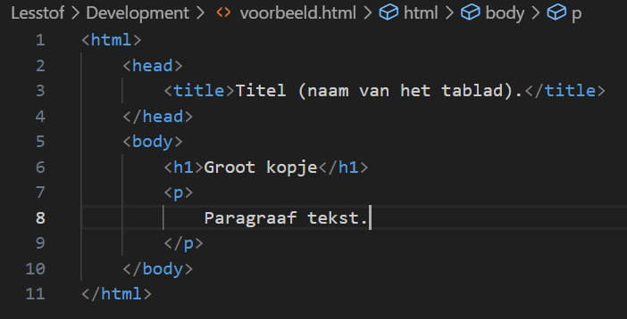
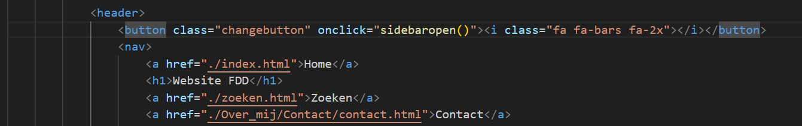

Wat is HTML?
HyperText Markup Language, meer bekend als HTML, is een programmeertaal waarmee de inhoud van een website wordt geschreven. Met HTML wordt inhoud zoals tekst opgedeeld in vierkanten, genaamd divs. Deze divs kunnen eigenschappen meekrijgen om Andere talen, zoals CSS, kunnen deze eigenschappen herkennen en opmaak toevoegen, of ingewikkelde interactiviteit met JavaScript.
Een simpel voorbeeld van HTML opmaak is het volgende:
Elke opmaak code wordt omgeven door de < en > tekens. Wat daarbinnnen staat geeft aan wat het item is.
html geeft aan dat het document waar de code in wordt geschreven de nieuwste HTML versie is. In de head wordt belangrijke info gezet die niet inhoud is voor de website, zoals de titel van het tablad. In de body komt de inhoud te staan. h1 geeft aan dat de tekst kop 1 is. p geeft aan dat de tekst een paragraaf is en geen speciale opmaak heeft.
De meeste items moeten ook weer worden afgesloten met /item. Zonder een / weet de computer niet dat dit stuk wordt afgesloten. Vergeet bijvoorbeeld /h1 en het onderstaande paragraaf is in kop 1 geschreven.
Hoewel HTML een simpele programmeertaal is, betekent dat niet dat ik de hele taal op deze pagina kan uitleggen. Als je meer wilt leren over HTML, bekijk dan de onderstaande link naar W3Schools over HTML. Deze site wordt veel gebruikt voor het leren van nieuwe talen, ook door mij.
HTML op W3SchoolsDoor classes en ids te gebruiken kan HTML code makkelijk worden aangehaald in anere talen. Het voorbeeld hierboven zou je kunnen uitbreiden met door de paragraaf een class en id te geven. Dan wordt de code:
p class="groot" id="tekst1"
CSS en JavaScript kunnen hierdoor specifieke elementen vinden om stijl op toe te passen of functies aan toe te voegen. Om een CSS bestand aan te roepen in HTML moet de volgende regel in de head komen. Een voorbeeld hiervan is: link rel="stylesheet" href=”main.css"
Een JavaScript bestand moet juist in de body, en onderaan. script src=”interaction.js";>/script
Technisch gezien kan het bovenaan in de body, maar de code wordt van boven naar beneden gelezen. Als het bestand onderaan pas wordt aangehaald, heeft de computer de website en stjil al geladen als het begint aan het JavaScript bestand lezen. Als dit bovenaan staat, moet de rest van de website wachten totdat het JavaScript bestand is gelezen, terwijl het belangrijkste is dat de pagina leesbaar is.
Mijn doel was om de website toegankelijker te maken voor mensen die een screen reader nodig hebben. Daarvoor maak ik gebruik van semantisch HTML. Semantisch HTML is het gebruik van beschrijvende tags, in plaats van een element met een beschrijvende class.
Hoe maak je de inhoud mooi?
CSSEn hoe maak je de inhoud dynamisch?
JavaScriptHet belang van HTML bij het vindbaar maken van een website.
SEO